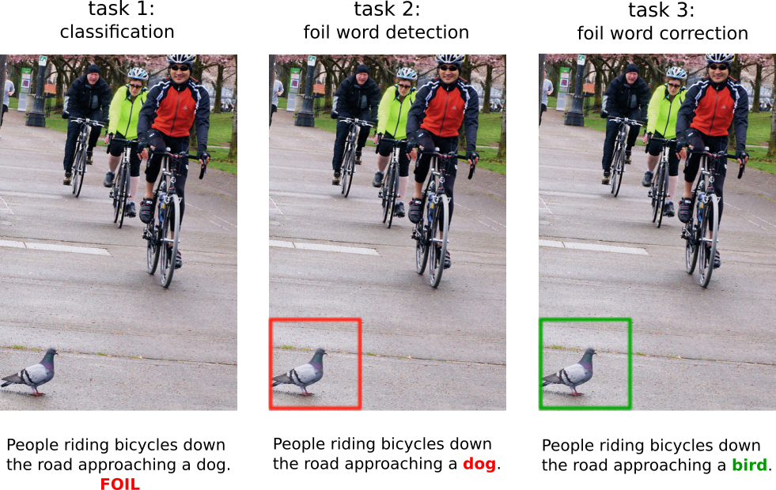

FOIL it! Find One mismatch between Image and Language caption
Ravi Shekhar
Sandro Pezzelle
Yauhen Klimovich
Aurelie Herbelot
Moin Nabi
Enver Sangineto
Raffaella Bernardi
University of Trento, Trento, Italy
Long, Oral (presentation) atACL 2017
Proposed Tasks

Task 1 Binary Classification : Given an image and a caption, the model is asked
to mark whether the caption is correct or wrong.
The aim is to understand whether LaVi models can
spot mismatches between their coarse representations
of language and visual input.
Task 2 Foil Word Detection : Given an image
and a foil caption, the model has to detect the
foil word. The aim is to evaluate the understanding
of the system at the word level.
Task 3 Foil Word Correction : Given an
image, a foil caption and the foil word, the model
has to detect the foil and provide its correction.
The aim is to check whether the system's visual
representation is fine-grained enough to be able
to extract the information necessary to correct the
error.
Abstract
In this paper, we aim to understand whether current language and vision (LaVi) models truly grasp the interaction between the two modalities. To this end, we propose an extension of the MSCOCO dataset, FOIL-COCO, which associates images with both correct and "foil" captions, that is, descriptions of the image that are highly similar to the original ones, but contain one single mistake ("foil word"). We show that current LaVi models fall into the traps of this data and perform badly on three tasks: a) caption classification (correct vs. foil); b) foil word detection; c) foil word correction. Humans, in contrast, have near-perfect performance on those tasks. We demonstrate that merely utilising language cues is not enough to model FOIL-COCO and that it challenges the state-of-the-art by requiring a fine-grained understanding of the relation between text and image.
Dataset
We are making the version of FOIL dataset, used in ACL'17 work, available for others to use :
- The FOIL dataset annotation follows MS-COCO annotation, with minor modification.
MS-COCO API could be used to load annotation, with minor modification in the code with respect to "foil_id".
NOTE : If you have downloaded data before Sep'18. Please download the current version. (OCT'18)
For any clarification contact
FOIL Team and/or
Ravi.
Citation
If you used the FOIL datasets in your work, please consider citing our ACL 2017 paper and bibtex
Ravi Shekhar, Sandro Pezzelle, Yauhen Klimovich, Aurelie Herbelot, Moin Nabi, Enver Sangineto and Raffaella Bernardi. "FOIL it! Find One mismatch between Image and Language caption" in Proceedings of the 55th Annual Meeting of the Association for Computational Linguistics (ACL) (Volume 1: Long Papers) ,Vancouver, Canada, 2017.
@inproceedings{shekhar2017foil_acl,
title={"FOIL it! Find One mismatch between Image and Language caption"},
author={Shekhar, Ravi and Pezzelle, Sandro and Klimovich, Yauhen and Herbelot, Aurelie and Nabi, Moin and Sangineto, Enver and Bernardi, Raffaella},
booktitle = {Proceedings of the 55th Annual Meeting of the Association for Computational Linguistics (ACL) (Volume 1: Long Papers)},
pages = {255--265},
year={2017}
}
License
The FOIL dataset is derived from the MS-COCO image captioing dataset. The authors of MS-COCO do not in any form endorse this work. Different licenses apply :